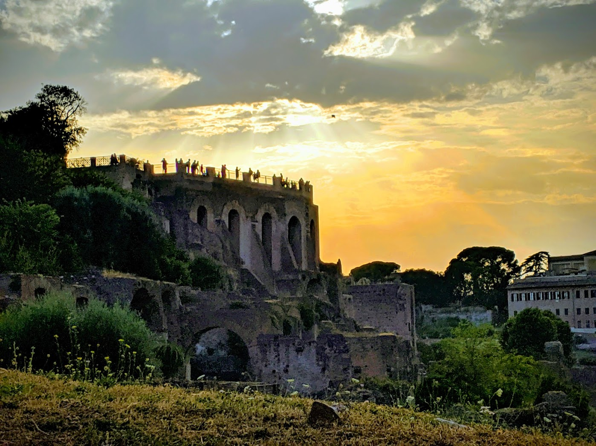

This image is from the remnants of ancient Rome, as seen in 2019. Human civilizations, like individuals, seem to age and decay over time. Given enough time, species tend to go extinct. There is no reason to think ours is any exception. Except this time, we have far more power to alter our environment. Power to create and power to destroy. I'm looking for a way we can escape this trap, and build something for our descendents that will last.
You'll find a collection of my work here: guides to securing your online accounts and personal devices, write-ups on risks from emerging technologies, book and article reviews, and some information about me. If you're interested in the motivation for my work, and how I think we got here, read this post.
If you would like to follow my writing, please join my mailing list